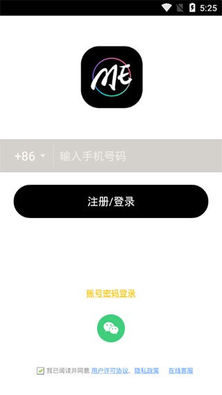
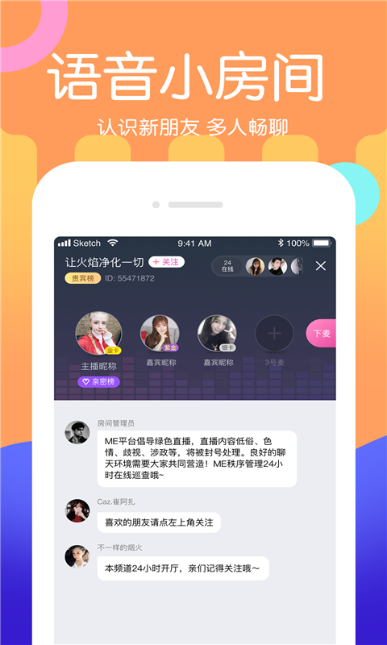

深夜刷到一款不露脸的声音 App，用了一周聊聊真实感受
作为一个社恐但又偶尔想找人说说话的人，ME 这种只靠声音交友的应用让我挺好奇的。花了一周正经体验，从随机电话到语音房间，从逛大厅到试着上了个小房间，说说真实感受。
为什么会装它
说实话我已经很久没主动装过社交类 App 了——大部分不是套路就是营销，而且"看脸"这件事让社恐压力很大。那天凌晨三点睡不着，在应用商店随便翻，看到 ME官网 介绍写着"不露脸的声音交友"，就随手下载了。
从官方下载装完打开，它的界面给人的第一印象是干净。没有弹窗广告砸脸，侧边栏的功能分类也很清楚。刚注册完就弹了实名认证的要求——这让我稍微有点犹豫，但看了一下是常规的手机号验证加简单的身份确认流程，也没太折腾，就通过了。

实际用下来：挑三件事说真话
随机电话：广撒网但挺有趣
我最先试的是随机电话功能。点进去之后系统就开始呼叫在线用户，接通了就计时。说实话一开始挺尴尬的——第一通电话对方接起来双方沉默了三秒，然后我憋出一句"哈喽，随机到的缘分，你好呀"，对方噗嗤笑了，气氛就松下来了。
它有个"下一张"按钮特别实用，觉得不对味一键挂断立刻呼叫下一个，快节奏的筛选比声动匹配那种挂了还要重新等的方式爽多了。唯一的体验就是，工作日上午在线的人真的少，空号概率高，晚间 21 点之后明显好很多。
有个细节让我印象深刻：系统会在接通前给对方的声音打一个很短的预览——虽然只有几秒钟，但能帮你提前判断要不要接。这个小设计比直接盲接贴心多了。
语音房间：氛围比想象中好
逛大厅的时候我发现房间主题还挺多样的——有唱歌房、情感树洞、游戏陪玩，甚至还有深夜电台。挑了一个"失眠陪伴"的房间进去，公屏里已经有几十号人在聊了，房主是个声音很温柔的女生。
房间的玩法比我预想的复杂：有麦位系统，想说话要先申请上麦；有 PK 环节，两个房间比拼听众投票；还有心动互动的小游戏。我蹲了两个晚上的同一间房，慢慢记住了里面几个活跃的老成员，房主也在第三晚主动跟我打了招呼。
后来才知道，想养成一间常驻房，固定时段出现比什么都重要。房间的乐趣一半来自玩法，另一半真的来自"固定那批人"——每晚都在的那些 ID，慢慢就像朋友一样。

声动匹配：带话题的聊天确实不尴尬
随机电话是"广撒网快筛"，声动匹配就是"认真聊"。系统会给匹配的对话预设一些真心话题，比如"你最近一次哭是什么时候"这种。虽然有时候话题不一定适合，但总比两个人对着沉默强。
有一次匹配到一个男生，预设话题是"你最讨厌什么样的人"，我们聊了快二十分钟对社交礼仪的看法，互加了好友。这种慢节奏的匹配适合想认真聊天的人，就是等匹配的时间比随机电话长一些。
有点地方我想吐槽
心值和 ME 币的关系我一开始真没搞懂。ME 币是充值拿来送礼的，心值是主播收礼赚的收益——方向完全相反的两套东西放在钱包里，第一次看余额的时候还以为自己充的钱变成心值了，愣了好一会儿才明白过来，对照ME文档还发现了更多细节。新人可能需要一点时间适应这个体系。
还有，标签匹配的精准度有待提高。我把自己的兴趣标签改成"深夜聊天""电影""写作"，但系统给我推的匹配对象标签并不总是贴合。当然这可能是我选的标签太窄了，也可能是语音社交的用户池本身就有局限。
适合谁，不适合谁
适合想找人聊天但又怕露脸的人——不管是社恐、怕自拍、还是单纯觉得声音交流更放松，ME 的"先声音后脸"逻辑能帮你卸下很多包袱。如果你有开播意愿，上面还有完整的收益体系，心值攒够就能提现，路径也挺清晰的。
不太适合想快速找到精准同好的人——标签匹配还在完善中，随机电话的用户池也是大浪淘沙，要找到聊得来的需要一点耐心和运气。另外实名认证是硬性门槛，在意隐私的人可能要权衡一下。
最后想说
用了一周，它没有让我"上瘾"，但确实填补了一些深夜想说话又找不到人的空窗。声音社交这条路比图文轻、比视频松，ME 在这个赛道上走得不算差。有兴趣的朋友可以自己试试，看看是不是你的菜。对了，我自己随手整理的一些 ME 使用心得，分别放在 GitHub、Gitee 和 GitCode 三个仓库里，有需要的可以去翻翻。